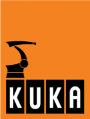

НАШИ РОБОТЫ – ВАШЕ ПРАКТИЧЕСКОЕ ПРИМЕНЕНИЕ
KUKA Roboter немецкая компания, производитель промышленных роботов, штаб-квартира находится в Аугсбурге. Компания заявляет, что является одним из трёх ведущих поставщиков промышленных роботов для автомобильной промышленности на мировом и ведущим поставщиком на европейском рынке. KUKA имеет 25 дочерних компаний в Соединенных Штатах, Мексике, Бразилии, Японии, Китае, Корее, Тайване, Индии и почти всех европейских странах, главным образом это филиалы по продажам и обслуживанию. Название компании KUKA является сокращением от Keller und Knappich Augsburg, а также зарегистрированной торговой маркой промышленных роботов и других продуктов компании.
Компания была основана в 1898 году Иоханном Йозефом Келлером и Якобом Кнаппишем в Аугсбурге. Производство было сконцентрировано на внутреннем и городском освещении, но в скором времени были охвачены и другие производственные сферы (сварочные инструменты и оборудование), а в 1966 году фирма KUKA стала лидером на рынке коммунальной техники в Европе. В 1973 году KUKA создала свой первый промышленный робот, известный как FAMULUS. В это время компания является частью группы Квандт, но в 1980 году семья Квандт отстраняется от производственных процессов, и KUKA становится государственной компанией. В 1995 году фирма разделилась на KUKA и KUKA Welding (теперь KUKA Systems). Сегодня KUKA концентрируется на передовых решениях в сфере автоматизации производственных процессов. Компания является частью KUKA AG (ранее IWKA Group). В августе 2016 года контроль над компанией установила китайская компания-производитель бытовой техники Midea, потратившая на выкуп акций более $4 миллиардов.
Компания KUKA предлагает роботов, идеально адаптированные к практическим применениям в соответствующей отрасли, а также разрабатывает индивидуальные робототехнические системы. Благодаря инновационным технологиям и продуманной инженерии мы предлагаем широкий ассортимент продукции:
Успехом установок можно управлять – при помощи производительной технологии управления фирмы KUKA. Благодаря модульной конструкции оборудования и открытой архитектуре программного обеспечения на базе ПК технологию управления можно настроить для Вашей установки и специфических требований с учетом индивидуальных особенностей. Кроме того, Вам предоставляются многочисленные возможности расширения, при помощи которых можно очень просто адаптировать систему управления к изменяющимся или абсолютно новым производственным задачам. Данные возможности обеспечивают гибкость Вам, а Вашему производству – постоянную конкурентоспособность.
| Система | Описание | |
|---|---|---|
| KUKA smartPAD | Сенсорный экран. Графическая поддержка. Гибкое взаимодействие. Чем больше возможности роботов, тем больше при управлении роботами на первый план выступает интерфейс, интуитивно понятный для пользователя. Новый планшет KUKA smartPAD компании KUKA с большим сенсорным экраном с антибликовым покрытием и высоким разрешением наглядно демонстрирует возможности интуитивно понятного управления роботами. | |
| KR C4 | Более производительная, надежная, гибкая и, прежде всего, более интеллектуальная. Революционная концепция KR C4 создает надежный фундамент для систем автоматизации завтрашнего дня. Чтобы снизить расходы на интеграцию автоматизации, а также на техническое обслуживание и уход. И при этом постоянно повышать эффективность и гибкость систем. | |
| KR C4 compact | Повышенная эффективность, надежность, гибкость и интеллектуальность. KR C4 compact предлагает эффективную и надежную технологию KR C4 в миниатюрном исполнении. Ее универсальная конструкция, открывающая широкие возможности дооснастки, обеспечивает многопрофильность использования системы. |
ул. Вербная 8а строение 1 и строение 3 107143 г. Москва ,Россия : +7 (495) 781 31 20 :+7 (495) 781 31 19 Info.RU@kuka.com www.kuka-robotics.ru